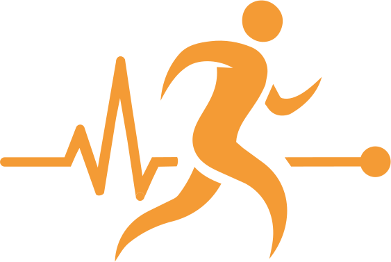

Lo primero que se mueve: la línea se dibuja de derecha a izquierda y el punto empieza a viajar. Nada de texto grande todavía.
ENTRA: CORTE (EMPALME DEL LOOP)tiene pulso.
Lo primero: el pico de la línea; el titular aparece palabra por palabra justo después, anclado arriba a la izquierda.
CORTE A LA IZQUIERDA →en segundos.
Lo primero: el pico empuja la tarjeta desde la derecha. 62.5 y 8 cuentan hacia arriba en la segunda mitad; al final se presiona GUARDAR SET.
CORTE A LA IZQUIERDA →se calculan
solos.
Lo primero: el pico más alto de todo el video (responde al 02). El número cuenta de 62.5 a 79.2 y recién ahí se enciende NUEVO RÉCORD.
CORTE A LA IZQUIERDA →Lo primero: la tarjeta CONSUMIDO entra con el pico; las kcal cuentan, las barras se llenan en cascada y al final se completa el anillo de agua (único uso del cian).
CORTE A LA IZQUIERDA →descansás.
Lo primero: la línea afloja los picos y se vuelve ondas largas; una sola entrada de la tarjeta y después todo quieto. Es el respiro antes del cierre.
CORTE A LA IZQUIERDA →a un mensaje.
Lo primero: tres puntos de "escribiendo…" en la conversación; después llega la burbuja del coach (entrada suave, sin rebote).
FUNDIDO →Un solo pulso.
El beat quieto: una sola entrada corta del titular; después no se mueve nada salvo un temblor mínimo de la línea.
CORTE →
Lo primero: la línea se recoge hacia el centro y dibuja el latido del logo; el corredor se revela siguiendo el trazo y después aparece PULSO. Esta secuencia es también el loop del logo.
CORTE →con pulso.
Lo primero: logo, frase y URL en una sola entrada. En los últimos 0.6 s la línea del logo se estira hacia la izquierda y queda plana: es exactamente el frame 01 (empalme del loop).
LOOP → 0105 ─izq─ 06 ─izq─ 07 ─fundido─ 08
08 ─corte─ 09 ─corte─ 10 ─línea plana─ 01
Una sola dirección: todo avanza hacia la izquierda, como un monitor. Las tarjetas entran por la derecha llevadas por el pico y salen por la izquierda a la misma velocidad.
línea / marca #F49B35 · dato #E8FF59
solo agua #3DDCFF · secundario #8A8A93
Space Grotesk 700 titulares 110–140 px · JetBrains Mono números y etiquetas · Inter apoyo
No: rebotes, paneos lentos, degradados en texto, teléfonos brillosos, fotos de stock, promesas de tienda.